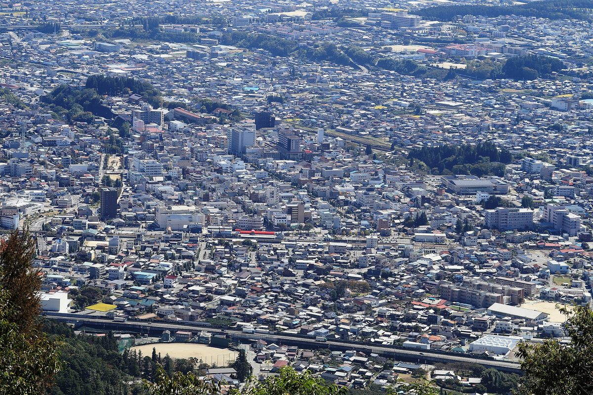

일본 이이다시 시민 회사가 세운 태양광 431곳…공공 지붕 무상 대여·지역환경권 조례로 20여 년 키웠다

2004년 설립 오히사마에너지, 가정은 설치비 0원에 9년 정액 뒤 소유권 넘겨받아…주택 약 2,300가구에 지붕 태양광
일본 나가노현 이이다시에서 시민들이 세운 회사가 20여 년 동안 태양광발전소 431곳을 지으며 주민 주도 에너지 전환의 본보기가 되고 있다. 2004년 설립된 오히사마에너지사는 시가 공공시설 지붕을 20년간 무상으로 빌려주고 생산된 전기를 20년 동안 고정가격으로 사들이는 계약을 맺으면서 출발해, 같은 해 1호 펀드로 공민관 14곳에 발전설비를 세웠다. 초기 출자에는 시민 476명이 두 달 만에 2억150만 엔을 모았고, '오히사마펀드 2009'에는 145명이 7,520만 엔을 내 연 1.4~2.5%의 수익을 나눠 받았다. 가정은 설치비를 내지 않는 대신 9년 동안 월 1만9,800엔(4.995kW 기준)의 정액 요금을 낸 뒤 10년째에 패널 소유권을 넘겨받으며, 현재 이이다시 주택 3만8,000여 가구 가운데 약 2,300가구(5.5%)에 지붕 태양광이 설치돼 있다. 시는 2013년 지역 자원을 주민의 공동재산으로 보고 주민이 우선 활용하도록 한 지역환경권 조례를 만들었고, 오히사마에너지사 등 3개사가 세운 소매 전력회사 마치즈쿠리전력은 전기요금이 지역 밖으로 빠져나가지 않고 지역 안에서 돌게 하고 있다.
시민에너지 관점
이이다시의 431곳은 정부 공모의 숫자가 아니라 시민 출자와 시의 공공 지붕, 조례가 20년 넘게 맞물려 쌓인 결과다. 한국 햇빛소득마을도 빠르게 늘고 있지만, 이번 취재가 견준 제천시의 에너지 조례는 지역 자원의 시민 공동소유나 구체적인 재정 지원을 명시하지 않고 있다. 이이다시의 시민 회사는 반대 의견이 있으면 사업을 진행하지 않는 원칙으로 주민의 신뢰를 쌓았고, 그 신뢰가 다시 출자로 이어졌다. 지자체는 공모 선정을 기다리기에 앞서 공공 지붕의 장기 무상 대여와 주민 우선 활용 원칙을 조례에 담는 일부터 시작해야 한다.
출처: 단비뉴스 2026-10-18 김현희·안소현·최서정·김성경·정세빈 원문 보기
長野県飯田市の市民会社が建てた太陽光431カ所…公共屋根の無償貸与と地域環境権条例で20年余り育てる
2004年設立のおひさまエネルギー、家庭は設置費0円で9年間の定額払いの後に所有権を取得…住宅約2,300世帯に屋根太陽光
長野県飯田市で市民が設立した会社が20年余りで太陽光発電所431カ所を建て、住民主導のエネルギー転換の手本となっている。2004年に設立されたおひさま進歩エネルギー（おひさまエネルギー社）は、市が公共施設の屋根を20年間無償で貸し、発電した電気を20年間固定価格で買い取る契約を結んだことから始まり、同年の1号ファンドで公民館14カ所に発電設備を設けた。初期の出資では市民476人が2カ月で2億150万円を集め、「おひさまファンド2009」には145人が7,520万円を出して年1.4～2.5%の収益分配を受けた。家庭は設置費を払わない代わりに9年間、月1万9,800円（4.995kW基準）の定額料金を支払い、10年目にパネルの所有権を受け取る仕組みで、現在、飯田市の住宅3万8,000世帯余りのうち約2,300世帯（5.5%）に屋根上の太陽光が設置されている。市は2013年、地域の資源を住民の共同財産とみなし住民が優先して活用するとした地域環境権条例を制定し、おひさまエネルギー社など3社が設立した小売電力会社「まちづくり電力」は、電気料金が地域の外に流れ出ず地域の中で循環するようにしている。
市民エネルギーの視点
飯田市の431カ所は政府の公募による数字ではなく、市民の出資、市の公共屋根、条例が20年以上かみ合って積み上がった結果だ。韓国の太陽光所得村も急速に増えているが、今回の取材が比較した堤川（チェチョン）市のエネルギー条例は、地域資源の市民による共同所有や具体的な財政支援を明記していない。飯田市の市民会社は反対意見があれば事業を進めないという原則で住民の信頼を築き、その信頼が再び出資につながった。自治体は公募の選定を待つ前に、公共屋根の長期無償貸与と住民優先活用の原則を条例に盛り込むことから始めるべきだ。
出典: Danbi News 2026-10-18 Kim Hyun-hee, Ahn So-hyun, Choi Seo-jeong, Kim Seong-kyung, Jeong Se-bin 原文を読む
日本饭田市市民公司建成431座太阳能电站，靠公共屋顶无偿出借和地区环境权条例培育20余年
2004年成立的Ohisama能源公司，家庭零安装费、付9年定额后取得所有权；约2,300户住宅装上屋顶太阳能
在日本长野县饭田市，由市民设立的公司20余年来建成431座太阳能电站，成为居民主导能源转型的榜样。2004年成立的Ohisama能源公司起步于市政府与其签订的合同：市政府把公共设施屋顶无偿出借20年，并以固定价格收购所发电力20年；同年公司通过第一号基金在14处公民馆安装了发电设备。初期出资时，476名市民在两个月内筹集了2亿150万日元；在"Ohisama基金2009"中，145人出资7,520万日元，每年获得1.4%至2.5%的收益分配。家庭无需支付安装费，而是在9年内每月支付1万9,800日元（以4.995kW计）的定额费用，第10年取得面板所有权；目前饭田市3万8,000余户住宅中约2,300户（5.5%）装有屋顶太阳能。市政府于2013年制定地区环境权条例，把地区资源视为居民的共同财产并由居民优先利用；Ohisama能源公司等3家公司成立的零售电力公司"城镇建设电力（Machizukuri Denryoku）"则让电费不流向地区之外，而在地区内部循环。
市民能源视角
饭田市的431座电站不是政府招募的数字，而是市民出资、市政府的公共屋顶和条例20多年相互配合积累的结果。韩国的阳光收入村也在快速增加，但这次报道所比较的堤川市能源条例并没有明确规定地区资源由市民共同所有，也没有写明具体的财政支持。饭田市的市民公司坚持只要有反对意见就不推进项目的原则，赢得了居民信任，而这种信任又转化为出资。地方政府不应只等待公募入选，而应先把公共屋顶长期无偿出借和居民优先利用的原则写进条例。
来源: Danbi News 2026-10-18 Kim Hyun-hee, Ahn So-hyun, Choi Seo-jeong, Kim Seong-kyung, Jeong Se-bin 查看原文
Citizen-founded company in Japan's Iida has built 431 solar plants, nurtured over 20 years by free public roofs and a local energy rights ordinance
Ohisama Energy, founded in 2004, installs home systems at no upfront cost and hands over ownership after nine years of fixed payments; about 2,300 homes have rooftop solar
In Iida, Nagano Prefecture, a company founded by citizens has built 431 solar power plants over two decades, becoming a model of resident-led energy transition. Ohisama Energy, founded in 2004, began when the city agreed to lend the roofs of public buildings free of charge for 20 years and to buy the electricity at a fixed price for 20 years; that same year its first fund put generating equipment on 14 community halls. In its early fundraising, 476 citizens put up 201.5 million yen within two months, and 145 people invested 75.2 million yen in the Ohisama Fund 2009, receiving annual returns of 1.4 to 2.5%. Households pay nothing to install but pay a fixed 19,800 yen a month for nine years (for a 4.995kW system) and take ownership of the panels in the tenth year; about 2,300 of Iida's roughly 38,000 homes (5.5%) now have rooftop solar. In 2013 the city passed a local environmental rights ordinance treating local resources as residents' common property with residents given first use, and a retail power company set up by three firms including Ohisama Energy keeps electricity bills circulating within the area rather than flowing out.
Citizen Energy View
Iida's 431 plants are not the product of a government selection round but of citizen investment, city-owned roofs and an ordinance working together for more than 20 years. South Korea's Sunlight Income Villages are multiplying quickly, but the energy ordinance of Jecheon, the city the reporters compared, does not spell out citizen co-ownership of local resources or concrete financial support. Iida's citizen company built trust by refusing to go ahead with any project that faced objections, and that trust turned back into investment. Local governments should not simply wait for selection rounds but start by writing long-term free use of public roofs and a residents-first principle into their ordinances.
Source: Danbi News 2026-10-18 Kim Hyun-hee, Ahn So-hyun, Choi Seo-jeong, Kim Seong-kyung, Jeong Se-bin Read the original